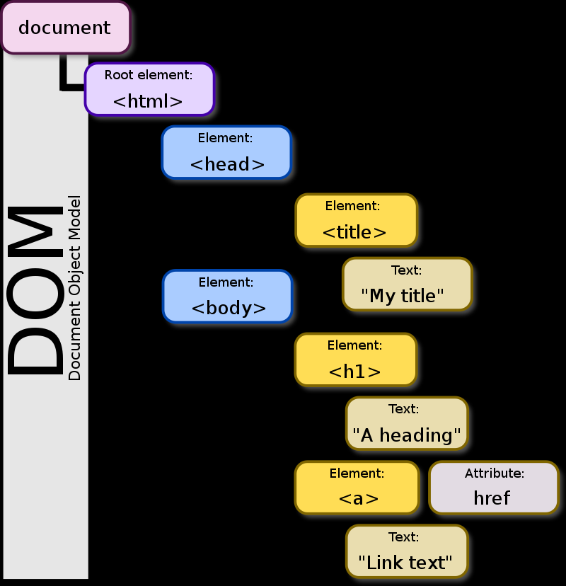

DOM & BOM Note
Table of Contents
DOM
Introduction
What is that DOM thing? Imagine on our web page, where Javascript code is loaded eventually, we also render basic HTML code.
Javascript and the browser, these two pieces interact all the time.
Different ways of loading Javascript files will affect the parsing of the HTML code because the browser simply reads that HTML file from top to bottom and when it encounters a script, it executes it, when it encounters other HTML elements, it simply parses and renders those and in the end, it then renders the pixels on the screen which you need to see to see a button, to see a title and so on.
Javascript is a hosted language, that means the browser provides the environment for Javascript to run, it provides the Javascript engine which in the end parses and understands all the Javascript code and executes it in the end.
So the browser provides that, it also provides a bunch of APIs, a bunch of functionalities into which Javascript can tap so that Javascript can interact with the browser.
Actually browser exposes functionality to let Javascript interact with that rendered HTML code and it’s called the Document Object Model, the abbreviation of course is DOM and that’s where this term comes from.
So the DOM is this loaded and rendered HTML code. To be precise, the object representation of this code which the browser creates behind the scenes into which we can tap with Javascript. Thus Javascript can work with a bunch of objects which will be exposed to us as Javascript objects which represent what the browser rendered or what the browser made of.
Besides, in Javascript, we got certain methods, certain functionalities, like here this document query selector code that allows us to reach out to the loaded HTML code and for example with this code snippet which you see here, we get access to the first h1 element we have in the loaded HTML code.
1 | const titleEl = document.querySelector('h1'); |
DOM is not strictly tied to browsers, there are other tools which can also parse HTML that’s not even restricted to Javascript, so in other languages like Python you also can find certain tools or certain plugins, extensions which allow you to read and work with HTML code or also with Javascript if you’re running it through Node.js. let’s say, that does not have this DOM functionality built in because you typically use it on the server side or it’s simply detached from a browser but you can still add certain packages to kind of bring that back in and still be able to parse and read a HTML file.
The browser however has it all built in for you. This document object obove which is globally available which is not created by you but which the browser exposes to you to give you access to all the different ways of interacting with that HTML page.
document object
document is a property of that other global object and that’s the window object.
It is the root DOM node which the browser exposes to you. That means that this is really the topmost entry point to get access to all that rendered HTML code. So this provides you various methods and functionalities to get access to the elements, to query for elements, to query for HTML elements, to interact with its DOM contents, so to interact with a loaded HTML code.
window on the other hand is a global object which actually has document as property, so window is the real topmost global object made available to you in Javascript in the browser and that reflects the active browser window or tab.
It’s basically the global entry point, and gives access to all the features that the browser wants to expose to you.

Try console.log(document) in the web page console. By default, you’ll see you get a strange representation which looks like HTML code, that’s a little feature by the chrome dev tools. This is actually a Javascript object but since it’s tied to the loaded document, to that loaded HTML code, it gives you this presentation where you can even select different parts if you hover over them.To get a look into the real Javascript object, type console.dir(document) and now you get access to the real Javascript object with all the properties.
The body property of document gives you access to entire new object which reflects your document body and everything that’s attached to that and this will also allow us to get access to all the HTML content rendered in there.
The method console.dir() displays an interactive list of the properties of the specified JavaScript object. The output is presented as a hierarchical listing with disclosure triangles that let you see the contents of child objects.
In other words, console.dir() is the way to see all the properties of a specified JavaScript object in console by which the developer can easily get the properties of the object.
Node & Element
Nodes are the objects make up the DOM, everything in the DOM is a node. HTML tags are just element nodes.
The read-only nodeType property of a Node interface is an integer that identifies what the node is. It distinguishes different kind of nodes from each other, such as elements, text and comments.
Here is the reference: nodeType Node
On element nodes, you have special properties and methods to interact with the elements, to change their style, to change their content and so on. You also have these on methods and text nodes.
An element is a part of a webpage. In XML and HTML, an element may contain a data item or a chunk of text or an image, or perhaps nothing. A typical element includes an opening tag with some attributes, enclosed text content, and a closing tag.
Elements and tags are not the same things. Tags begin or end an element in source code, whereas elements are part of the DOM, the document model for displaying the page in the browser.
DOM Tree
In the context of the DOM, a node is a single point in the node tree. Various things that are nodes are the document itself, elements, text, and comments.
Browser parses the HTML code, renders all pixel, and creates an object representation of that.
For instance, the HTML tag is translated to an HTML node as it’s called and this is an element node.
According to the W3C HTML DOM standard, everything in an HTML document is a node: The entire document is a document node. Every HTML element is an element node.
browser creates a tree of elements or a tree of nodes and in that, the HTML node is the top node, it has the head and the body as child nodes. So the relation in your HTML code is reflected in the created objects as well. The browser keeps track off the parent child relations you have between different HTML elements and it does keep track by creating such a node tree in the end.

However not just HTML tags are loaded and created as objects but also all text that you have and these are created as so-called text nodes. Due to the way styling works and so on, most whitespace is actually not rendered but it is part of that DOM tree, of that node tree, so it’s part of the DOM but of course, also the normal text is part of the DOM as text nodes though and these really are two different types of nodes.
You have element nodes for all the elements you have but then the content in the elements might be other elements but might also be text and text is indeed stored as objects but as a different kind of object, as text nodes with different properties and different methods.
query
document.querySelector() and document.getElementById() will select one element at a time, you also have document.querySelectorAll() and other methods like Element.getElementsByTagName() which will select multiple elements.
querySelector takes a CSS selector as you could use it in a CSS file. It takes any CSS selector and therefore this might be a selector that matches multiple elements but in this case, this method will always give you access to the first matched element on the page.
getElementById takes an ID which assigned to an HTML element and selects an element by that. Since ID should be unique on web page, this is a method which returns one element.
querySelectorAll, getElementsByTagName and there are other methods as well return collections of elements. Typically it’s such a node list which is not a real array but array-like, which supports certain behaviors of an array but not all of them.
querySelectorAll takes a CSS selector as query selector but unlike query selector, it does not return the first element which it matched but all elements that match the selector. It returns a non-live node list, a snapshot of the currently rendered DOM, whereas these get something by something methods like getElementsByTagName return a live node list which means that if you then add or remove elements, you’ll see that reflected in the list which you loaded through the get something by something method, it will not be reflected in the data returned by querySelectorAll.
NodeList
A NodeList is an array-like collection (list) of Node Objects. The nodes in a NodeList can be accessed by index (starts at 0). A NodeList is almost the same as an HTMLCollection.
There are 2 varieties of NodeList: live and static.
In some cases, the NodeList is live, which means that changes in the DOM automatically update the collection.
1 | const parent = document.getElementById('parent'); |
In other cases, the NodeList is static, where any changes in the DOM do not affect the content of the collection. The ubiquitous document.querySelectorAll() method returns a static NodeList.
Attribute & Property
Attributes are mapped to properties and some live synchronization is set up but that’s not always the case, for example here is an input element with an ID, with a CSS class and with a value and these three different kinds of attributes behave in different ways when it comes to the DOM object that is created.
1 | <input id='1' class='default' value='Enter text'> |
What write in the HTML code is named an attribute. What being added on the HTML tag is an attribute of that tag. What the browser does with these attributes is it creates such a DOM object based on the tag name, input in this case and preconfigures it and preconfigures some of its properties based on these attributes because the important thing is that the attribute is the thing in HTML code. The property is a value stored in the object that’s created based on HTML code.
Objects in Javascript have properties, no matter if they are some DOM objects or not.
let’s store this input element in a constant, then we can read the ID from it but also the class name and the value and the properties.
It’s important to understand that not every attribute has a one-to-one mapping in properties, input.id has it, there we have an ID attribute and an ID property and if we change the value of the attribute, the property updates, if we change the value of the property, the attribute will update, so we have some live synchronization going on here.
input.className is different, there we also have live synchronization, so if we change the property, the attribute will change, if we change the attribute, the property will change but the names are not equal so we don’t really have a one-to-one mapping.
class on the input, so on the HTML tag is translated to a className property here on the DOM object and the browser does this automatically, it’s important to know that not always the attribute name is equal to the property name.
For input.value, it has yet another different behavior. It’s called value as an attribute and value as a property but we have no real life synchronisation going on, only one way. What you have here is actually that if you change the input value, this will not be reflected back to the attribute, only if you change the attribute, the value properties value will change again and that makes sense.
Keep in mind this input element is there to hold some user input and if you would always reflect this back to the attribute, then that would mean that if you ever want to reset the input to its initial value which the developer writing the HTML code at some point of time stored in that value attribute, that this would not be possible.
So that’s why when the user types there, the users input is stored on the value property but not reflected back into the HTML code.
Traverse
Traverse means that once select one element, one node, therefore, you might be interested in diving into all of its child nodes, for example to add it all list items in a list or anything like that, so rather than manually selecting every element you might be interested in with query selector or so on, you could take an element which you already did select and then move to its children or its siblings and so on based on that element, that’s what’s traversing the DOM means.
- children
- descendant: all of the children of the context node, and all of their children, and so forth.
- parent
- ancestor: all the ancestors of the context node beginning with the parent node and traveling through to the root node.
children is a property that lets you select direct descendants (elements that are immediately nested in another element). It returns a HTML Collection that updates when children elements are changed.
1 | <ul class="list"> |
1 | const list = document.querySelector('.list') |
parentELement is a property that lets you select the parent element. The parent element is the element that encloses the current element.
1 | const firstListItem = document.querySelector('li') |
parentElement is great for selecting one level upwards. To find an element that can be multiple levels above the current element, you use the closest method. closest lets you select the closest ancestor element that matches a selector.
closest starts searching from the current element, then proceeds upwards until it reaches the document. It stops returns the first element it finds.
1 | const firstLink = document.querySelector('a') |
The Element.nextElementSibling read-only property returns the element immediately following the specified one in its parent’s children list, or null if the specified element is the last one in the list.
1 | const firstListItem = document.querySelector('li') |
The Element.previousElementSibling read-only property returns the Element immediately prior to the specified one in its parent’s children list, or null if the specified element is the first one in the list.
1 | const secondListItem = document.querySelectorAll('li')[1] |
BOM
Introduction
The Browser Object Model (BOM) allows JavaScript to “talk to” the browser.There are no official standards for the Browser Object Model (BOM).
Since modern browsers have implemented (almost) the same methods and properties for JavaScript interactivity, it is often referred to, as methods and properties of the BOM.
window object
This principal object, giving access to all the core APIs that the browser wants to expose. For example, alert. With window, in running Javascript code, by default you have access to everything in window.
Totally correct would window.alert be because window is this topmost global object which is exposed to you by the browser and there, you have the alert functionality and actually browsers always parse your Javascript code such that window. is automatically added in front of some function if that function can’t be found anywhere else, so the browser always looks in the window object if you’re calling or accessing something.
1 | alert() |
Keep in mind window does not really give you access to the real window but just to the tab in which your script is running, so you won’t be able to use window to interact with a totally different web page loaded in a different tab because that would be a huge security issue if you could start reading information from another tab on your web page here.
So whilst it’s called window, it really just means the currently loaded tab but also the dimensions of the general window and so on.